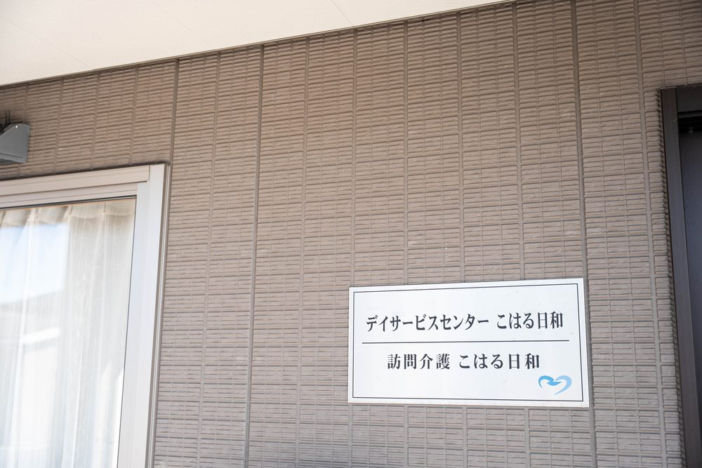
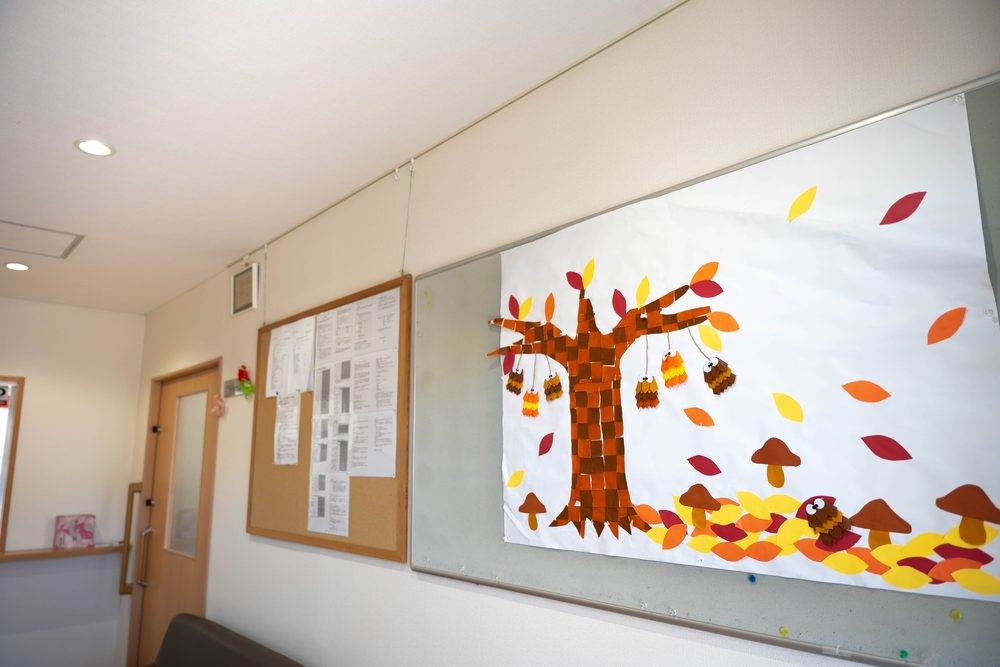
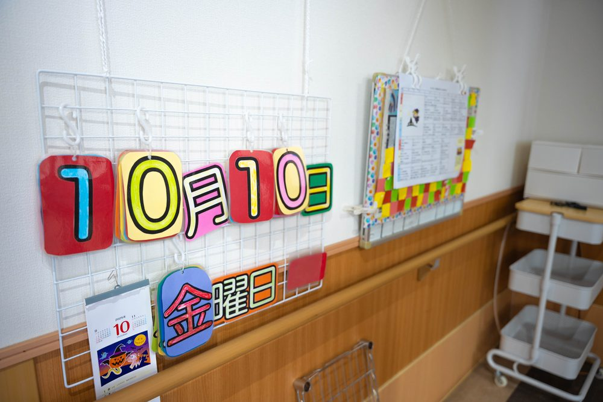

デイサービスセンターこはる日和では、どんなことができますか？
A. 回答デイサービスセンターこはる日和は、倉敷市玉島柏島にある通所介護の事業所です。定員は25人で、送迎は倉敷市・浅口市・矢掛町が通常の地域です。入浴（機械浴にも対応）、機能訓練、口腔機能の訓練を行っています。利用日にそのままいなだ医院を受診できるのが、医院が運営していることの利点です。

送迎の範囲
4台の送迎車で対応しています。
| 区分 | 内容 |
|---|---|
| 通常の実施地域 | 倉敷市、浅口市、矢掛町 |
| 地域外の場合 | ご相談のうえ、片道の距離1kmあたり20円をいただいています |
お住まいが対象になるかどうか、道順や時間帯によって調整が必要な場合があります。まずはお電話でご確認ください。
1日の過ごし方と設備
- 入浴：浴室が3か所あり、そのうち1か所は特殊浴槽（機械浴）です。おひとりで浴槽をまたぐことが難しい方にも対応しています。
- 機能訓練：機能訓練指導員が、生活のなかで必要な動作にあわせた訓練を行います。
- 口腔機能の訓練：食べる・飲みこむ力を保つための取り組みを行っています。
- 食事：1回624円です。
利用日に受診できます
デイサービスの終了時に、いなだ医院までお送りしています。通院される方は別室で診察をお受けいただく形にしており、待ち時間が短くなること、他の患者さんとの接触を減らせることにつながっています。通院の付き添いが難しいご家族にとっても、負担が軽くなる仕組みです。



事業所の概要
| 項目 | 内容 |
|---|---|
| 所在地 | 〒713-8123 岡山県倉敷市玉島柏島920-14 |
| 電話 | 086-522-8787 |
| 指定年月日 | 2014年5月1日 |
| 利用定員 | 25人 |
| 営業日 | 月曜〜土曜・祝日（日曜と12月31日〜1月3日はお休み） |
| 営業時間 | 9時00分〜17時00分 |
| サービス提供時間 | 2時間以上8時間未満（9時15分〜16時20分の間で対応） |
| 職員 | 介護職員、生活相談員2人、看護職員1人、機能訓練指導員1人ほか（常勤換算7人） |
| キャンセル料 | 利用予定日の前日17時以降にキャンセルされた場合、食費を全額いただいています |
ご利用の方は、要介護1から要介護5まで幅広くいらっしゃいます。看護職員が配置されているため、健康状態の確認をしながら過ごしていただけます。
ご相談・お問い合わせ
見学と体験の利用を受け付けています。空き状況は日によって変わりますので、お電話でご確認ください。
- デイサービスセンター こはる日和：086-522-8787
- ご相談全般：かしわじま居宅介護支援センター 086-525-0600
本ページは一般的な情報提供を目的としています。掲載している定員・営業日・費用などは、公表されている事業所情報をもとにしたもので、最新の内容と異なる場合があります。ご利用にあたっては必ず重要事項説明書をご確認ください。ご不明な点はお電話（086-525-0600）にてお問い合わせください。
見学や体験のご希望を受け付けています。お気軽にお電話ください。
最終更新：2026年8月26日